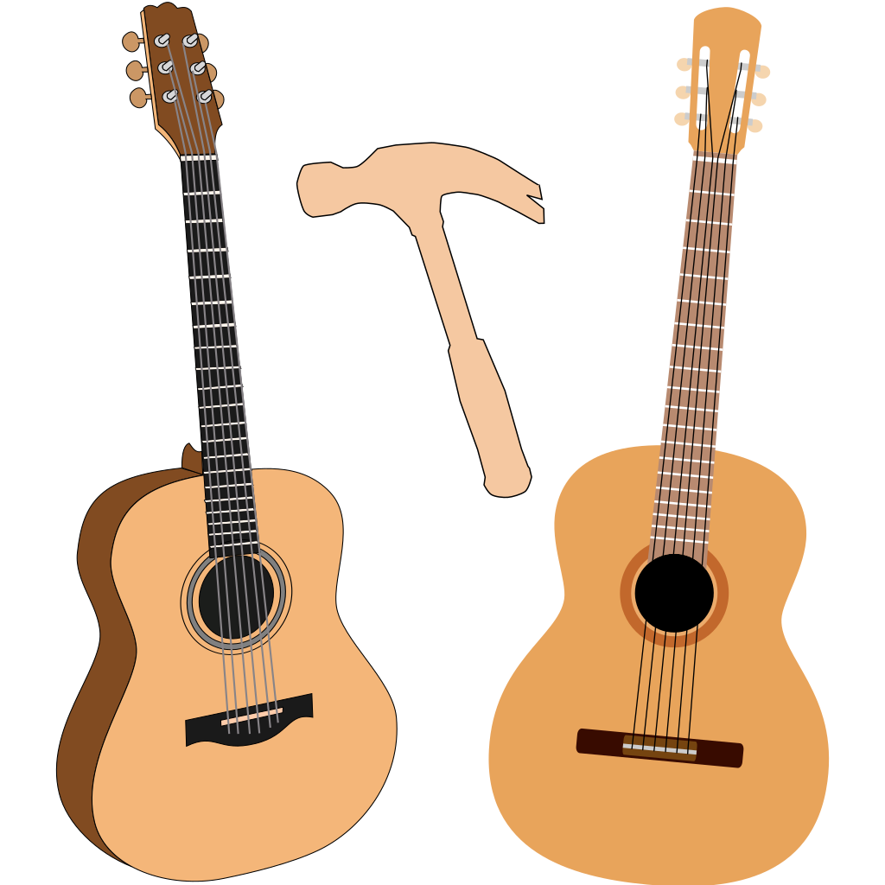
Guitar Tap
User Manual
Version 1.0
iOS/iPadOS · macOS · Windows · Linux
Contents
- Chapter 1 — Introduction
- 1.1 What Guitar Tap Does
- 1.2 What You Need
- 1.3 How This Manual Is Organised
- Chapter 2 — Getting Started
- 2.1 Installing the App
- 2.2 Granting Microphone Permission
- 2.3 Selecting Your Audio Input
- 2.4 Importing a Microphone Calibration File
- 2.5 Choosing a Measurement Type
- 2.6 Setting the Threshold — Finding Your Tap Level
- 2.7 Setting Peak Min — Filtering the Peak List (Guitar Mode)
- 2.8 Your First Tap — Guitar Mode Walkthrough
- Chapter 3 — Guitar Mode
- 3.1 Mode Labels and Classification
- 3.2 Setting Up for Guitar Mode
- 3.3 Microphone Placement
- 3.4 Single Tap Measurement
- 3.5 Multi-Tap Averaging
- 3.6 Inspecting and Adjusting Peak Selections
- 3.7 Overriding Mode Classification
- 3.8 Reading the Results Panel
- 3.9 Comparing Guitar Measurements
- Chapter 4 — Plate Mode
- 4.1 Overview of Plate Material Measurements
- 4.2 Preparing the Sample
- 4.3 Entering Dimensions in Settings
- 4.4 The 22% Suspension Technique
- 4.5 The Accept / Redo Review Flow
- 4.6 Tap 1 — Longitudinal
- 4.7 Tap 2 — Cross-Grain
- 4.8 Tap 3 — FLC (Optional)
- 4.9 Reading Plate Results
- Detected Peaks
- Gore Target Thickness
- Plate Properties
- Plate Process Instructions
- 4.10 Interpreting Plate Results
- Chapter 5 — Brace Mode
- 5.1 Overview
- 5.2 Setting Up Brace Dimensions
- 5.3 Technique
- 5.4 Reading Brace Results
- Detected Peaks
- Brace Properties
- Brace Process Instructions
- 5.5 Using Brace Mode to Compare Stock
- Chapter 6 — Working with the Spectrum
- 6.1 Live vs. Frozen Spectrum
- 6.2 Zooming and Panning — iOS and iPadOS
- 6.3 Zooming and Panning — macOS, Windows, and Linux Desktop
- 6.4 Auto dB
- 6.5 The Crosshair (iOS and iPadOS)
- 6.6 Peak Labels
- 6.7 Annotation Modes
- 6.8 Saving the Current View as Default
- Chapter 7 — Saving, Exporting, and Sharing Measurements
- 7.1 Saving a Measurement
- 7.2 Viewing Saved Measurements
- 7.3 Loading a Measurement into the View
- 7.4 Viewing Measurement Details
- 7.5 Editing Location and Notes
- 7.6 Exporting a Spectrum Image
- 7.7 Exporting a PDF Report
- 7.8 Saving a Comparison
- 7.9 Exporting a Comparison Spectrum Image
- 7.10 Exporting a Comparison PDF Report
- 7.11 Exporting a .guitartap File
- 7.12 Importing a Measurement or Comparison
- 7.13 Sharing Between iOS and macOS
- 7.14 Deleting Measurements
- Chapter 8 — Settings Reference
- 8.1 Opening Settings
- 8.2 Audio Input & Calibration
- 8.3 Measurement Type
- 8.4 Advanced — Display Settings
- 8.5 Advanced — Analysis Settings
- 8.6 Advanced — FFT Processing
- Chapter 9 — Controls Reference
- 9.1 Toolbar — iOS iPhone (Portrait)
- 9.2 Toolbar — iOS iPhone (Landscape)
- 9.3 Toolbar — iOS iPad (Portrait and Landscape)
- 9.4 Menu Bar — macOS, Windows, and Linux
- 9.4a Menu Bar — macOS
- 9.4b Menu Bar — Windows and Linux (Python desktop app)
- 9.5 Individual Controls
- 9.6 Tap Controls
- 9.7 Spectrum Chart Interactions
- Chapter 10 — Tips, Technique, and Troubleshooting
- 10.1 Tap Technique
- 10.2 Consistent Microphone Position
- 10.3 Dealing with Background Noise
- 10.4 Air Mode Technique
- 10.5 Ring-Out and Decay Time
- 10.6 Multi-Tap Averaging Strategy
- 10.7 Common Problems
- Chapter 11 — Glossary
- Appendix A — Keyboard Shortcuts (macOS)
- Appendix B — File Formats
- .guitartap
- Calibration Files (.txt / .cal)
- Frequency (Hz) Magnitude (dB)
- Exported Formats
Chapter 1 — Introduction
1.1 What Guitar Tap Does
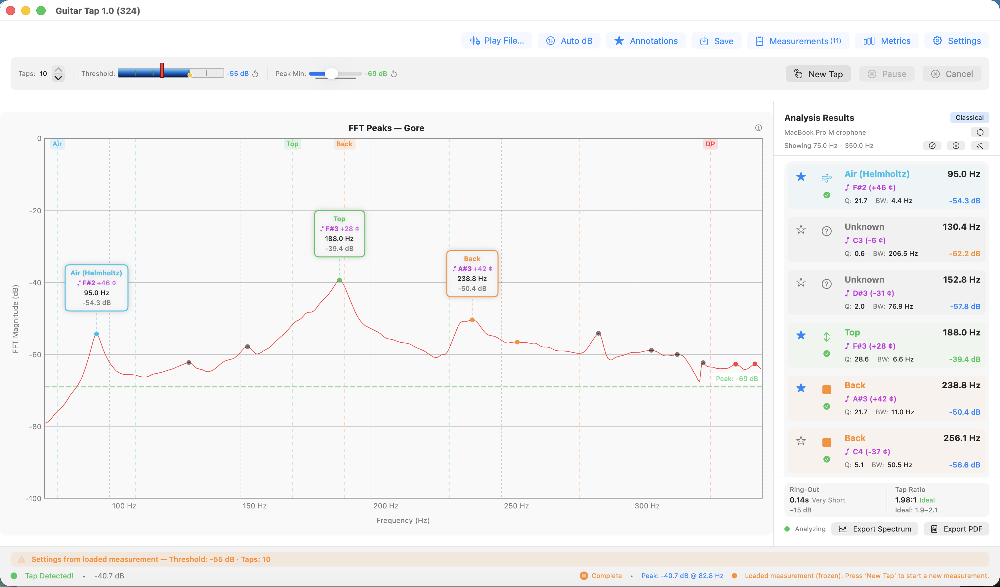
Guitar Tap captures a tap, runs an FFT, and presents the resulting spectrum with annotated peaks and a results panel. The app is designed around the three measurements a luthier following the Gore methodology (or any similar tap-tone-based workflow) actually takes:
-
Guitar mode — for a complete instrument body. Single or multi-tap averaging; identifies air, top, and back modes plus any other significant body resonances above the detection threshold.
-
Plate mode — for a free plate. Walks you through a longitudinal tap, a cross-grain tap, and optionally a free-length-cross tap, with a review step between phases so you can accept or redo each one before continuing.
-
Brace mode — for an individual brace. Captures a single longitudinal resonance.
In all three modes the tap is captured with onset alignment so the same
physical tap reliably yields the same spectrum, regardless of where in
the FFT frame the impulse happens to land. Measurements can be saved
locally, exported as PDF or spectrum data, and shared as .guitartap
files that round-trip between the iOS, macOS, and desktop builds.
1.2 What You Need
Hardware
-
A device. Guitar Tap runs on iPhone or iPad (iOS 17 or later), Mac (macOS 14 Sonoma or later), and Windows or Linux desktops via the Python version of the app.
-
A microphone. The built-in microphone of an iPhone, iPad, or modern Mac is good enough for relative comparisons (one plate against another, before and after a thickness change) even if absolute values may be slightly off. For repeatable absolute frequencies and clean spectra, a calibrated measurement microphone (such as a miniDSP UMIK-1) on a USB audio interface is the recommended setup. Microphone choice is discussed further in §2.3.
-
A tapping implement. The recommended implement is a small bouncy ball on the end of a stick — it produces a short, clean impulse with low operator variability. A firm knuckle rap also works well, particularly for guitar-body measurements.
-
A quiet workspace. A quieter room lets you set a lower detection threshold and capture softer taps cleanly.
-
The material to be measured. A free plate, a brace, or a complete instrument.
Optional
- A microphone calibration file (
.txtor.cal) for your measurement microphone. Importing it lets the app correct the spectrum for the microphone's frequency response. See §2.4.
1.3 How This Manual Is Organised
If you have just installed Guitar Tap and want to take your first measurement, start with Chapter 2 — Getting Started. It covers installation, microphone permission, audio-input selection, threshold and peak-min tuning, and a complete first guitar measurement.
If you already know the app and want a focused walk-through of a particular task — measuring a free plate, multi-tap sequences, export and share workflows — see the Guided Use Cases (Chapters 3 through 8).
For complete details on a specific control, setting, or shortcut, see the Reference chapters (9 through 11) and the Appendices.
A Glossary at the end defines the acoustic-analysis terms used throughout the manual.
Chapter 2 — Getting Started
This chapter takes you from a fresh install to your first measurement. Sections 2.6 and 2.7 cover one-time tuning that any new microphone or room benefits from; the settings persist so you only do it once.
2.1 Installing the App
iOS / iPadOS. Search "Guitar Tap" in the App Store and install.
macOS (native). Search "Guitar Tap" in the Mac App Store and install.
macOS / Windows (Python desktop build). Run the installer for your platform from the project release page. The build is bundled with PyInstaller and ships with its own Python runtime — no separate Python installation is required.
Linux (Python desktop build). Download the AppImage from the
project release page, mark it executable (chmod +x
GuitarTap-x.y.z.AppImage), and run it directly. The AppImage
includes everything required; no system packages need to be
installed.
The native and Python builds share the .guitartap file format —
measurements written on one can be opened on the other without loss.
2.2 Granting Microphone Permission
Guitar Tap cannot operate without microphone access. The grant procedure differs by platform.
iOS / iPadOS. A system dialog appears on first launch. Tap Allow. If you declined, re-enable in Settings → Guitar Tap → Microphone.
macOS. A system dialog appears on first launch. If you declined, or already declined for a previous build, open System Settings → Privacy & Security → Microphone and enable Guitar Tap.
Windows. Open Settings → Privacy & Security → Microphone. Ensure both "Microphone access" and "Let desktop apps access your microphone" are on.
Linux. PortAudio uses the system's PulseAudio or PipeWire
permissions; there is no in-app dialog. If recording is silent, check
the Recording tab of pavucontrol (or your equivalent mixer) while
Guitar Tap is running.
2.3 Selecting Your Audio Input
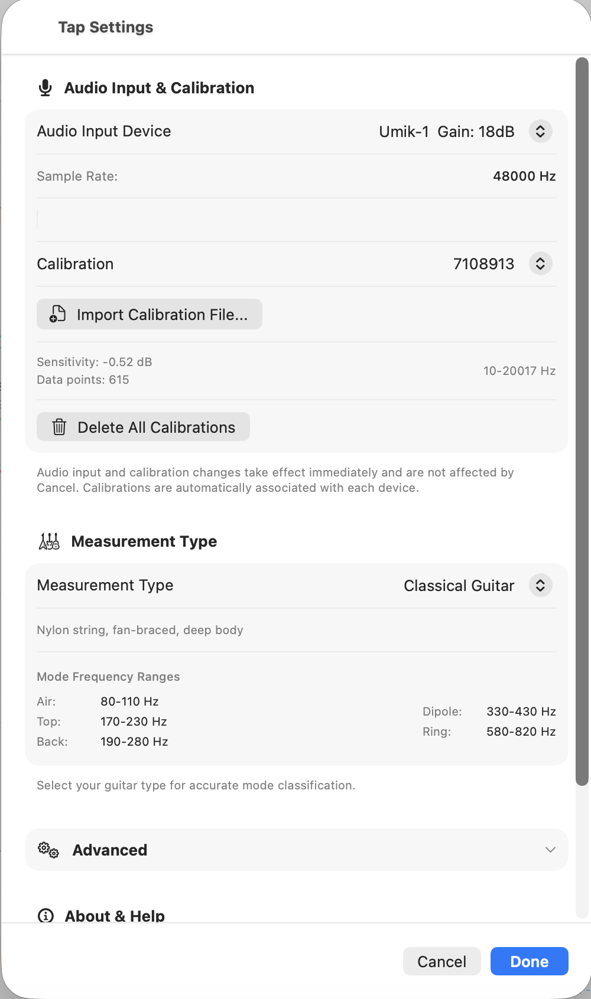
Open Settings (gear icon, top toolbar) and use the Audio Input section to pick your microphone.
- Selecting a device takes effect immediately and persists across launches; you do not need to confirm or apply the change.
- The built-in microphone of a modern Mac, iPhone, or iPad is fine for relative comparisons.
- A USB measurement microphone (such as a miniDSP UMIK-1) on a USB audio interface gives lower noise, flatter response, and supports per-device calibration (§2.4).
- The currently selected input is shown in the analysis screen so you always know what is being captured.
2.4 Importing a Microphone Calibration File
A calibration file corrects the captured spectrum for the microphone's own frequency response. Without it, the spectrum includes whatever roll-off and bumps the microphone contributes.
Guitar Tap accepts .txt and .cal files in the standard
two-column (frequency, dB) format that ships with most measurement
microphones.
To import:
- In Settings → Audio Input, with your measurement microphone selected, choose Import Calibration File and pick the file.
- The calibration is bound to that input device. When you switch away from it and back again later, the calibration reloads automatically.
- To remove all stored calibrations, use Clear All Calibrations in the same section.
The status area indicates when a calibration is active for the current input.
2.5 Choosing a Measurement Type
In Settings, the Measurement Type section determines what the analyzer is looking for:
- Generic Guitar / Acoustic Guitar / Classical Guitar / Flamenco Guitar. Guitar-body mode. The four sub-types differ in the expected frequency windows for the air, top, back, and dipole modes; pick the one closest to the instrument you are measuring. Generic uses the broadest windows.
- Plate. Free-plate measurement with the longitudinal, cross-grain, and optional free-length-cross phases.
- Brace. Single-tap longitudinal measurement on an individual brace.
The choice persists across launches. Changing it mid-sequence starts a new sequence in the new mode.
2.6 Setting the Threshold — Finding Your Tap Level
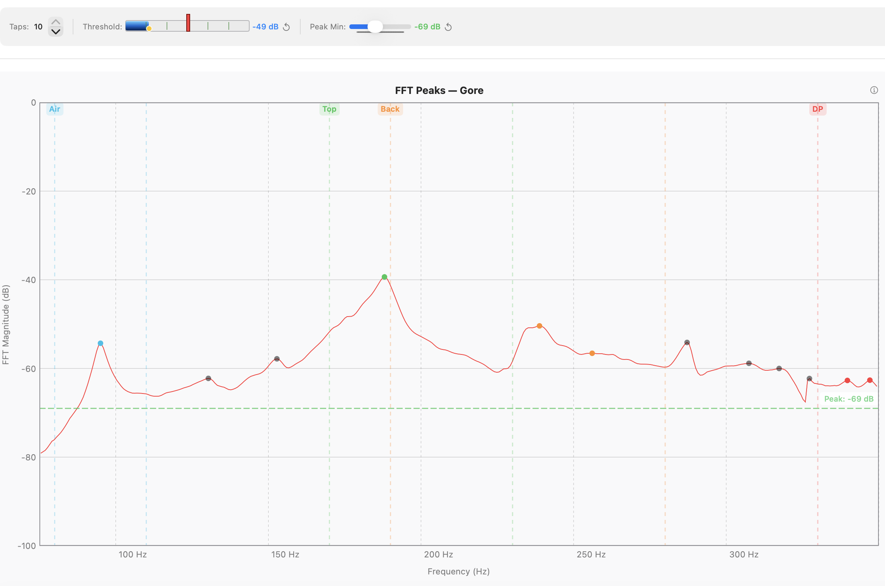
The Threshold slider sets the signal level a tap must exceed before the analyzer captures it. You will tune it once for your microphone, room, and tapping style; the value then persists.
The tuning procedure is the same in all three measurement modes:
- Press Pause. The spectrum stays live, but no taps will register — you can experiment without triggering a measurement.
- Make a representative tap and read the highest dB the live spectrum reaches.
- Set Threshold roughly 6 to 10 dB below that peak level. This leaves headroom for tap-to-tap variation while staying clear of ambient noise.
- Press Resume and tap again. The spectrum should freeze and the Tap Detected indicator should appear.
If taps are missed, lower the threshold. If ambient noise triggers false captures, raise it.
2.7 Setting Peak Min — Filtering the Peak List (Guitar Mode)
Peak Min sets the minimum spectrum magnitude at which a peak is annotated on the chart and considered for guitar-mode analysis. It is a guitar-mode control: in Plate and Brace modes the per-phase capture uses its own adaptive noise floor, and Peak Min only affects which peaks are drawn — never which are selected for the calculation.
Tune it from the same paused state used for Threshold:
- Still paused (continuing from §2.6), make a few representative taps and watch the peaks appear on the live spectrum.
- Raise Peak Min until noise peaks disappear. Lower it until the structural resonances you care about are visible.
- Press Resume and take the real measurement.
If you adjust Peak Min on a frozen spectrum after a measurement, press the wand button to re-run automatic mode selection against the new threshold.
Peak Min persists across launches.
2.8 Your First Tap — Guitar Mode Walkthrough
You now have everything you need.
- Position the microphone 5 to 15 cm from the sound hole. (For top- or back-tap measurements, position it 5 to 10 cm from the tap point.)
- The analyzer is already running on launch. Confirm Threshold and Peak Min are tuned per §2.6 and §2.7.
- Press Resume if you paused during tuning. The detector is armed and the spectrum is live.
- Tap the guitar — a knuckle rap on the bridge or a bouncy-ball strike on the back, depending on what you are measuring. The spectrum freezes when the tap registers.
- Open the Analysis Results panel and review the identified modes, frequencies, ring-out time, and tap-tone ratio.
- Press Save in the top toolbar to store the measurement so you can compare it to future taps.
That is a complete cycle. From here, see the use-case chapters for the workflow you actually want to run — guitar (Chapter 3), plate (Chapter 4), or brace (Chapter 5).
Chapter 3 — Guitar Mode
Guitar mode captures the body resonances of a completed instrument and presents them as a labelled peak list. This chapter assumes the microphone, calibration, threshold, and peak-min are already tuned as described in Chapter 2.
3.1 Mode Labels and Classification
Guitar Tap identifies and labels six classes of guitar-body modes: Air, Top, Back, Dipole, Ring, and Upper Modes. Classification is by frequency window: each guitar subtype (Generic, Acoustic, Classical, Flamenco) defines a range of frequencies in which a candidate for each mode is expected. The strongest peak inside a window is assigned to that mode; peaks outside every window are labelled Unknown.
Unknown peaks are shown on the chart by default so nothing in the spectrum is silently hidden. If you find them cluttering a chart that you intend to share or compare, turn them off via Settings → Advanced → Analysis Settings → Show Unknown Modes.
Generic is the recommended subtype for most measurement work. Its windows are wide enough to catch the air, top, and back modes of any of the common guitar archetypes, which is what you want when you simply need to see and label the resonances of the instrument in front of you. The other subtypes — Acoustic, Classical, Flamenco — are narrower and are most useful when:
- you want the quality indicators in the Results panel to reflect the typical frequency band for that style (the colour cues next to each mode and the tap-tone ratio are interpreted against the chosen subtype's expectations); or
- you are building or voicing to a target frequency range associated with a particular style and want the windows to exclude peaks that fall outside that target.
The frequency windows can be inspected in Settings → Measurement Type when a subtype is selected.
3.2 Setting Up for Guitar Mode
- Open Settings → Measurement Type and choose Generic Guitar unless you have a specific reason (quality indicators or a target frequency range) to choose Acoustic, Classical, or Flamenco — see §3.1.
- The frequency-window panel updates to show the ranges for the selected subtype. Confirm they bracket the modes you expect to find.
- Show Unknown Modes is on by default. Leave it on unless you are preparing a chart for sharing and want to declutter.
- Confirm Threshold and Peak Min are tuned for the current mic and room (see §2.6 and §2.7).
3.3 Microphone Placement
- Distance: 5 to 15 cm from the sound hole for body-cavity measurements; 5 to 10 cm from the tap point for top or back measurements.
- Angle: roughly perpendicular to the soundboard or back, but not so close that the diaphragm sees only one localized region.
- Surroundings: avoid hard surfaces within ~30 cm of the microphone. Reflections add spurious peaks and inflate the noise floor at the comb frequencies of the workbench geometry.
- Reproducibility: mark the mic position (a piece of tape on the bench is sufficient) if you intend to compare measurements across sessions on the same instrument. Small position changes shift the relative magnitudes of modes you may want to track build-to-build.
3.4 Single Tap Measurement
- Press New Tap to arm the detector. The status area shows the analyzer is waiting for a tap.
- Tap the instrument: a short, crisp knuckle or fingertip rap on the bridge, or a bouncy-ball strike on the back.
- The Tap Detected indicator appears and the spectrum freezes automatically.
- Read the annotated peaks on the frozen spectrum and the Analysis Results panel (see §3.8 for what each column means).
If the tap was missed or contaminated (a finger squeak, an ambient transient), press New Tap again to discard it and try once more.
If Threshold or Peak Min need adjusting before the live take, press Pause first — the spectrum stays live and no taps will register while you experiment. Move the sliders, tap freely, then press Resume when ready.
3.5 Multi-Tap Averaging
For tighter results, average several taps in one sequence.
- Set the Taps stepper at the top of the toolbar to the number of taps you want (1 to 10). Five is a common choice.
- Press New Tap as before. The status bar now shows progress — "Tap 1/5", "Tap 2/5", and so on.
- Tap the instrument the required number of times. Each captured tap re-arms the detector after a short cooldown; the spectrum re-freezes only after the final tap.
- When all taps are captured, the averaged spectrum is displayed with annotated peaks. Individual tap spectra are retained for comparison (see §6.x for the multi-tap comparison view).
Pause between taps. Press Pause if you need to pause mid-sequence (to reset the instrument's position, for example). The captured taps so far are preserved; Resume continues from where you left off.
Cancel mid-sequence. Press Cancel to discard all captured taps and end the sequence. New Tap then re-arms for a fresh attempt.
3.6 Inspecting and Adjusting Peak Selections
Each peak in the frozen spectrum is shown with a label (mode name) and a coloured dot whose colour matches its row in the Analysis Results panel.
- Toggle a peak's selection by tapping its label on the chart. Selected peaks contribute to derived values such as the tap-tone ratio; deselected peaks remain visible but are excluded from the calculation.
- Cycle the annotation set using the Annotations button: All (every detected peak labelled), Selected (only currently selected peaks), or None (no labels on the chart). The default is Selected, which matches what most luthiers want to see.
- Re-run automatic selection by pressing the wand button in the Analysis Results header. This is useful after raising or lowering Peak Min on a frozen spectrum: the wand re-classifies the visible peaks against the current Peak Min and re-selects one per mode window.
- Select All / Select None are available in the Results header for the cases where you want everything on or off in one step.
Selection changes are preserved when the measurement is saved.
3.7 Overriding Mode Classification
The automatic classifier occasionally picks the wrong peak — for example, when two candidates are close in magnitude and the wrong one falls inside the configured window. To correct it:
- In the Analysis Results panel, tap the row of the peak whose label you want to change.
- A mode picker appears with Air, Top, Back, Dipole, Ring, Upper Modes, Unknown, and a Custom label field for free-text annotations.
- Pick the correct mode. The chart label updates immediately.
Overrides are saved with the measurement and reapplied when the measurement is loaded later. The wand button respects manual overrides — a re-classify will not silently undo your choice.
3.8 Reading the Results Panel
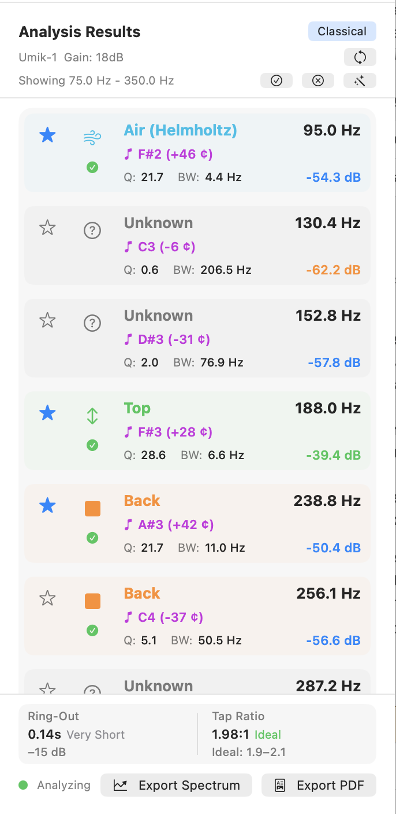
For each identified peak the Analysis Results panel shows:
- Mode label — Air, Top, Back, Dipole, Ring, Upper, or a custom override.
- Frequency — in Hz, to 0.1 Hz.
- Magnitude — in dB, relative to the spectrum's reference.
- Q — quality factor (centre frequency ÷ −3 dB bandwidth).
- Bandwidth — −3 dB bandwidth in Hz.
- Pitch — nearest equal-temperament note plus cents offset.
Below the peak list:
- Ring-out — decay time in seconds, computed from the magnitude envelope after the tap impulse. A structural-damping indicator.
- Tap Tone Ratio — f_Top ÷ f_Air. Typical values for a well-voiced guitar fall in the 1.8–2.4 range; the value is shown with a colour cue indicating whether it is in, near, or outside that band.
When a value is missing (a mode was not identified, or the ring-out could not be measured), the panel displays "—" rather than zero so the absence is unambiguous.
3.9 Comparing Guitar Measurements
Comparison overlays two to five saved guitar measurements on the same chart. Useful for any pair-or-more of measurements you want to see side by side — different build stages of the same instrument, different tap locations on the same body, different instruments you have built, or measurements of instruments built by someone else that you want to study or learn from.
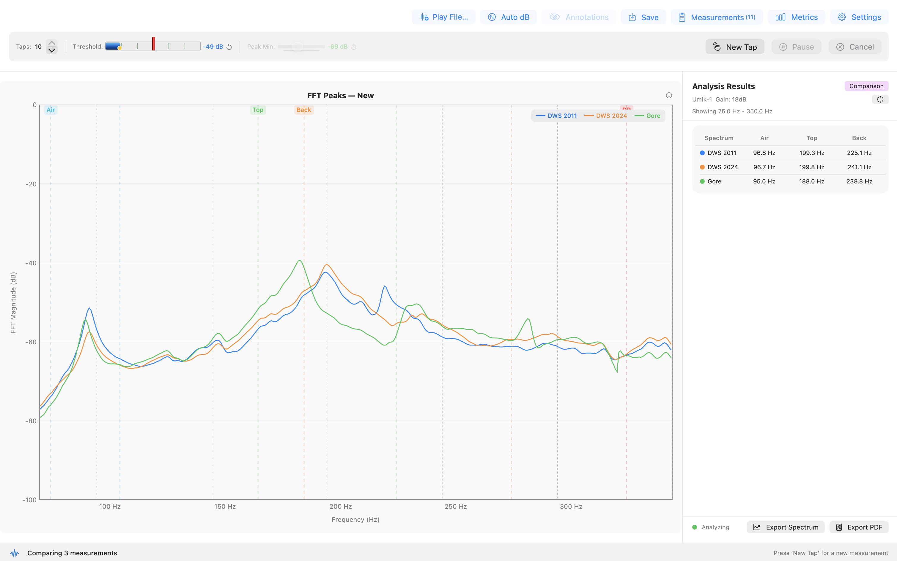
Starting a comparison
- Open the Measurements list.
- Tap to select two to five saved guitar measurements. Plate and brace measurements are excluded — comparison is guitar-only.
- Tap the Compare button that appears once two or more measurements are selected.
The chart switches to comparison view: each selected spectrum is drawn in a distinct colour with a legend. The Analysis Results panel switches to a comparison table with one column per spectrum (labelled with the colour dot from the legend) and rows for Air, Top, and Back frequencies. "—" appears where a mode was not identified.
What is available during comparison
Save, Export Spectrum, and Export PDF Report all remain active, but they operate on the overlay rather than on an individual measurement:
- Save stores the entire overlay as a single comparison in the Measurements list. The save sheet accepts an optional location label and notes. The saved comparison appears with a distinct badge and can be reloaded later to restore the overlay — every spectrum, its colour, and the Comparison Results table — exactly as it was.
- Export Spectrum (⌘E on macOS; Ctrl+E on Windows / Linux) writes an overlay PNG with all curves, their colours, and the legend.
- Export PDF Report (⇧⌘E on macOS; Ctrl+Shift+E on Windows / Linux) writes a comparison PDF: a metadata header (number of spectra, labels, date), the overlay image, and an Air / Top / Back frequency table with one column per spectrum.
A saved comparison .guitartap file can be imported via
File → Import Measurement (macOS / Python desktop) or the
Import Measurement button in the Measurements list (iOS). The app
detects the comparison on load and restores the overlay.
What is inactive during comparison
- Annotations button — each spectrum carries its own annotations set at capture time; there is nothing to cycle in the overlay.
- Threshold and Peak Min sliders — the comparison view is a static overlay of frozen measurements; live detection is not running.
- Taps stepper — no active capture sequence to configure.
Exiting comparison. Press New Tap to leave comparison mode and return to single-measurement operation.
Chapter 4 — Plate Mode
Plate mode captures the longitudinal, cross-grain, and (optionally) free-length-cross resonances of a rectangular tonewood blank and returns the moduli, specific modulus, radiation ratio, and Gore target thickness for the piece. This chapter assumes the microphone, calibration, threshold, and peak-min are already tuned as described in Chapter 2.
4.1 Overview of Plate Material Measurements
Plate mode runs a guided sequence of two or three taps on a rectangular blank suspended at its nodal points and computes the material properties used to evaluate a piece of tonewood:
- Longitudinal (L) — bending mode with grain. Yields E_L and c_L.
- Cross-grain (C) — bending mode across the grain. Yields E_C and c_C.
- Free-length-cross (FLC) — torsional mode, optional. Yields the shear modulus G_LC, which feeds the Gore target thickness calculation and tightens its result by roughly 5 to 7%.
From these the app derives ρ (from your dimensions and mass), specific modulus E_L/ρ, radiation ratio R, the E_C/E_L cross-to-long ratio, a quality rating against the spruce scale, and the Gore target thickness for the body dimensions and stiffness preset you have selected.
Plate mode is for raw blanks before bracing or cutting. For an individual brace, use Brace mode (Chapter 5); for a finished body, use Guitar mode (Chapter 3).
4.2 Preparing the Sample
The blank should be a clean rectangle with the grain parallel to one long axis. The numbers you enter into the app drive every derived quantity, so accuracy matters:
| Field | Target accuracy |
|---|---|
| Length (along grain) | 0.5 mm |
| Width (cross grain) | 0.5 mm |
| Thickness | 0.1 mm |
| Mass | 0.1 g |
A digital caliper handles the thickness measurement. Length and width are typically beyond the jaw span of a caliper for guitar-scale blanks; an accurate steel rule is the better tool there. A jeweller's scale or any 0.1 g kitchen scale handles mass.
Mass error dominates. Length and width errors scale linearly into the moduli; thickness scales as the cube. A 1% mass error and a 0.3% thickness error produce comparable changes in E.
4.3 Entering Dimensions in Settings
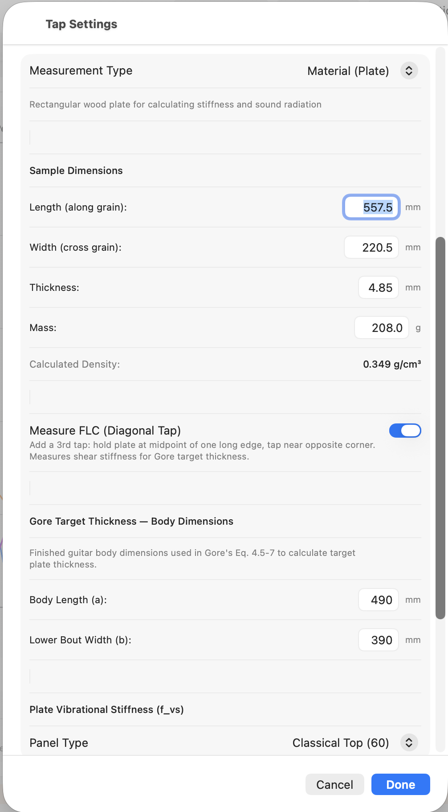
Open Settings → Measurement Type → Plate. Fill in:
- Length (mm) — along the grain.
- Width (mm) — across the grain.
- Thickness (mm).
- Mass (g).
A live density preview appears below the dimension fields. Use it as a sanity check on data entry. Spruce typically lands in the 0.35–0.45 g/cm³ band; a value below 0.30 or above 0.70 is almost always a transposed digit or a unit error somewhere in the four fields.
For the Gore target thickness, also enter:
- Body Length (mm) and Lower Bout Width (mm) — the dimensions of the instrument the plate is destined for.
- Plate Stiffness Preset — the target stiffness number the Gore
thickness calculation solves for. The named presets are starting
points calibrated to typical instrument styles:
- Steel String Top (75)
- Steel String Back (55)
- Classical (50)
- Custom — accepts any numeric target.
Custom is where you encode a successful build back into the calculation. The workflow has four steps:
1. Fully measure a plate — E_L, E_C, density, body dimensions
— *before* you build it, and keep the measurements. Note the
final plate thickness you settled on for the build (which may be the number from the Gore formula).
2. Build the instrument and live with it long enough to decide
whether the result is what you want. If it is, you have a
calibration point. If not then you need to adjust the plate stiffness preset on your next build to either stiffen the board or loosen the board to adjust the sound.
3. The Gore formula run on that plate's measurements with a
named preset would have predicted some recommended
thickness. Your finished thickness is the thickness that
actually produced the sound you liked. Scale the preset's
stiffness number linearly so the formula, applied to that
same plate's measurements, would output your finished
thickness. Save the scaled number as your **Custom** value.
4. From this point on, run new plates with **Custom** selected.
Each new board, with its own E_L, E_C, and ρ, yields a
*different* recommended thickness — each one calculated to
reproduce the calibration build's tonal outcome on that
specific piece of wood.
The Custom number carries "this is the kind of plate that makes the instrument I want." The Gore procedure does not predict an objectively ideal thickness; it gives you a reproducible way to translate a tonal target across pieces of wood that differ in stiffness and density.
Measure FLC is a toggle in the same section. Turn it on if you intend to capture the FLC tap (§4.8). The sequence then runs in three phases instead of two.
4.4 The 22% Suspension Technique
The three taps share one principle: hold the blank at a nodal point of the mode you want to measure, and tap at an antinode.
For longitudinal and cross-grain there is a catch — both modes are easy to excite at the same time, and the hold point alone decides which one wins in the spectrum. A hold on a mode's nodal line suspends that mode (it can vibrate freely); a hold on a mode's antinode damps it. To get a clean reading the hold must sit on the target mode's node and off the orthogonal mode's node.
In all three orientations the tap point is the centre of the plate face.
-
Longitudinal. Plate oriented with grain horizontal.
- The longitudinal mode's nodal line runs cross-wise at 22% from each short end.
- The cross-grain mode's nodal lines run length-wise at 22% from each long edge.
- Hold between thumb and forefinger 22% in from one short end along the length, close to one long edge but not at 22% in from it. The other end of the plate hangs free; tap at the centre.
-
Cross-grain. Rotate the plate 90° so grain is now vertical. Same logic with the modes swapped: now the cross-grain mode's node is the one you want to be on, and the longitudinal mode's node is the one to avoid.
- Hold 22% in from one long edge, close to one short end but not at 22% in from it. Other end hangs free.
-
FLC. One hand only. Hold at the midpoint of one long edge. Tap near the opposite corner, approximately 22% in from both the end and the side. The torsional mode FLC excites has its node along the centreline of the plate, so a single midpoint hold is enough.
Common errors: putting the hold on both modes' node lines at once (contamination — a longitudinal reading that looks like cross-grain or vice versa); holding too far in along the target axis (the support falls inside the mode shape and damps it); holding too firmly (adds damping regardless of position); and forgetting to rotate the plate between L and C — easy to do, easy to spot when C reads close to L.
4.5 The Accept / Redo Review Flow
Plate mode runs each phase as: arm, tap, freeze, review.
After a tap is captured the spectrum freezes and the detector pauses automatically. The tap controls re-label for the review state:
- The Pause button becomes Accept (green tint, checkmark icon). Pressing it locks in the current phase result and advances to the next phase. The next phase arms detection on its own — you do not need to press New Tap between phases.
- The Cancel button becomes Redo (orange, labelled Redo L, Redo C, or Redo FLC depending on which phase is being reviewed). Pressing it discards the current phase result and re-arms detection for the same phase.
During review the live spectrum is suppressed so the captured spectrum stays on screen for inspection. The status bar shows the current phase and tap count: Phase 2/3 · Tap 1/1, for example.
After every phase is accepted the Results panel updates with the complete plate calculations (§4.9).
Individual phase redo is only available before that phase is accepted. To restart the entire sequence — for example, you realise mid-FLC that the longitudinal tap was made before you'd entered the right dimensions — press New Tap; the captured phases are discarded and the sequence starts again from Longitudinal.
4.6 Tap 1 — Longitudinal
- Orient the plate with the grain running horizontally.
- Hold at 22% from each end along the length, near one long edge.
- Press New Tap. The status bar shows Capturing Longitudinal · Phase 1/2 (or Phase 1/3 if Measure FLC is on).
- Tap the centre of the plate face.
- The spectrum freezes. Inspect the lowest peak — it should be the longitudinal bending mode for a free-free beam of your dimensions, typically in the low hundreds of Hz for a guitar top.
- Press Accept to lock the phase in, or Redo L to re-capture if the tap was contaminated.
After Accept the sequence advances to Cross-grain automatically.
4.7 Tap 2 — Cross-Grain
- Rotate the plate 90° so the grain now runs vertically.
- Hold at 22% from each end along the width, near one short edge.
- The status bar now reads Capturing Cross-grain · Phase 2/2 (or Phase 2/3). Detection is already armed — do not press New Tap.
- Tap the centre of the plate face.
- Inspect the frozen spectrum, then Accept or Redo C.
After Accept, the sequence either advances to FLC (if Measure FLC is on) or marks the measurement complete.
4.8 Tap 3 — FLC (Optional)
FLC measures the flat long/cross torsional mode and yields the shear modulus G_LC. The Gore target thickness calculation uses G_LC for its shear correction; without it, the calculation substitutes a default that over-estimates target thickness by roughly 5 to 7%. For final plate thicknessing, capturing FLC is worth the extra tap.
- Enable Measure FLC in Settings before starting the sequence if you have not already.
- Hold one long edge at its midpoint, with one hand only.
- The status bar reads Capturing FLC · Phase 3/3.
- Tap near the opposite corner, approximately 22% in from the end and 22% in from the side.
- Accept or Redo FLC.
After Accept the measurement is complete and the Results panel updates with Gore target thickness including the shear correction.
4.9 Reading Plate Results
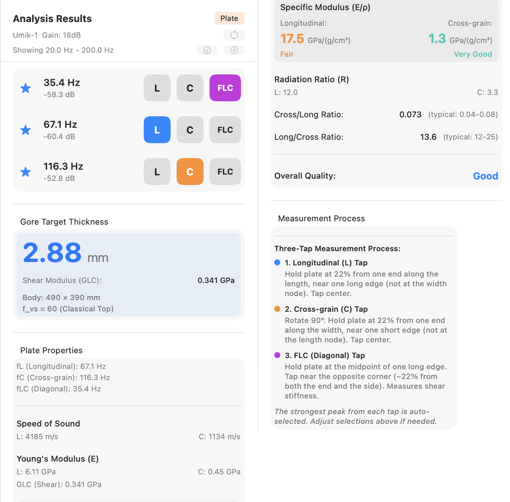
For a completed plate measurement the Results panel scrolls through four sections, top to bottom.
Detected Peaks
One row per captured phase — two rows (L, C) for a two-tap sequence, three rows (L, C, FLC) when FLC is enabled. Each row shows a selection-indicator star, the peak frequency, the peak magnitude in dB, and a coloured phase badge identifying which mode the peak belongs to (blue L, orange C, purple FLC). The full detected-peak list and the Peak Min filter from guitar mode do not apply here; what you see is the auto-selected best peak from each phase capture.
Gore Target Thickness
The headline thickness for the body dimensions and stiffness preset entered in Settings, displayed prominently in mm. Below the number:
- Shear Modulus (G_LC) — the value used in the thickness calculation, shown when FLC was measured.
- "G_LC assumed 0 — enable FLC tap for a more accurate result" — shown when FLC was skipped. The thickness above is then approximate (roughly 5 to 7% over-estimate; see §4.8).
- Body dimensions and the f_vs value (with preset name, or a literal "custom" annotation when Custom is active) — the parameters that fed the calculation, exposed so you can cross-check Settings against the body the plate is destined for.
Plate Properties
Material characterisation of the wood:
- Frequencies used — fL, fC, and (if measured) fLC.
- Speed of Sound — c_L and c_C in m/s.
- Young's Modulus (E) — E_L and E_C in GPa. G_LC is appended to this block when FLC was measured; the row is absent when FLC was skipped.
- Specific Modulus (E/ρ) — the headline material number, in GPa/(g/cm³). Shown in large type for both Longitudinal and Cross-grain, each with a per-direction quality rating (Excellent / Very Good / Good / Fair / Poor against the spruce scale) and a colour cue matching that rating.
- Radiation Ratio (R) — reported for both directions.
- Cross/Long Ratio — E_C / E_L. Typical spruce 0.04 to 0.08; the typical band is shown beside the value.
- Long/Cross Ratio — the reciprocal. Typical spruce 12 to 25; the typical band is shown beside the value.
- Overall Quality — a separate row at the bottom of the section combining both directions into a single rating (Excellent / Very Good / Good / Fair / Poor) with the matching colour cue.
The quality scales are calibrated for spruce; readings on cedar, redwood, or other top woods read as a point of comparison rather than an absolute grade.
Plate Process Instructions
A reference card describing the two-tap (or three-tap, if FLC is enabled) measurement procedure. Useful as an in-place refresher when you come back to plate mode after a break and want the hold and tap positions without leaving the results panel.
4.10 Interpreting Plate Results
Specific modulus and radiation ratio capture what Young's modulus alone misses: how stiff a plate is per unit of weight it is asking the player to drive. Two blanks with identical E_L can sit in very different quality bands when their densities differ. Sort by E_L/ρ, not E_L, when triaging a stack of blanks.
Gore target thickness is a starting point for thicknessing, not a specification. Reproduce it on the bench, then voice from there with hands-on tap-tone evaluation; the final number lives at the intersection of your wood, your bracing pattern, and the instrument design you are building toward.
For tracking measurements across multiple blanks: enter a brief identifier (board number, supplier, billet) into the Notes field on the Save sheet so the saved measurement carries its provenance. Plate measurements can be saved, reloaded, and exported the same way guitar measurements can (Chapter 7); the comparison overlay described in §3.9 is guitar-only.
Chapter 5 — Brace Mode
Brace mode is a fast, single-tap longitudinal measurement for an individual brace strip. It reports the moduli, specific modulus, and quality rating in one capture; cross-grain, shear, and Gore thickness are all skipped. This chapter assumes the microphone, calibration, threshold, and peak-min are already tuned as in Chapter 2.
5.1 Overview
Brace mode runs a single longitudinal tap on a brace strip and returns the wood's stiffness and quality. Compared to Plate mode:
- No cross-grain tap. E_C is not measured.
- No FLC tap. G_LC is not measured.
- No Cross/Long ratio.
- No Gore target thickness. Brace mode is for stock evaluation, not for thicknessing.
What you get: E_L, c_L, specific modulus E_L/ρ with a per-direction quality rating against the spruce scale, and radiation ratio R.
Brace mode is intended for batch-evaluating brace strips before selecting stock for a build. For a free plate, use Plate mode (Chapter 4); for a complete instrument, use Guitar mode (Chapter 3).
5.2 Setting Up Brace Dimensions
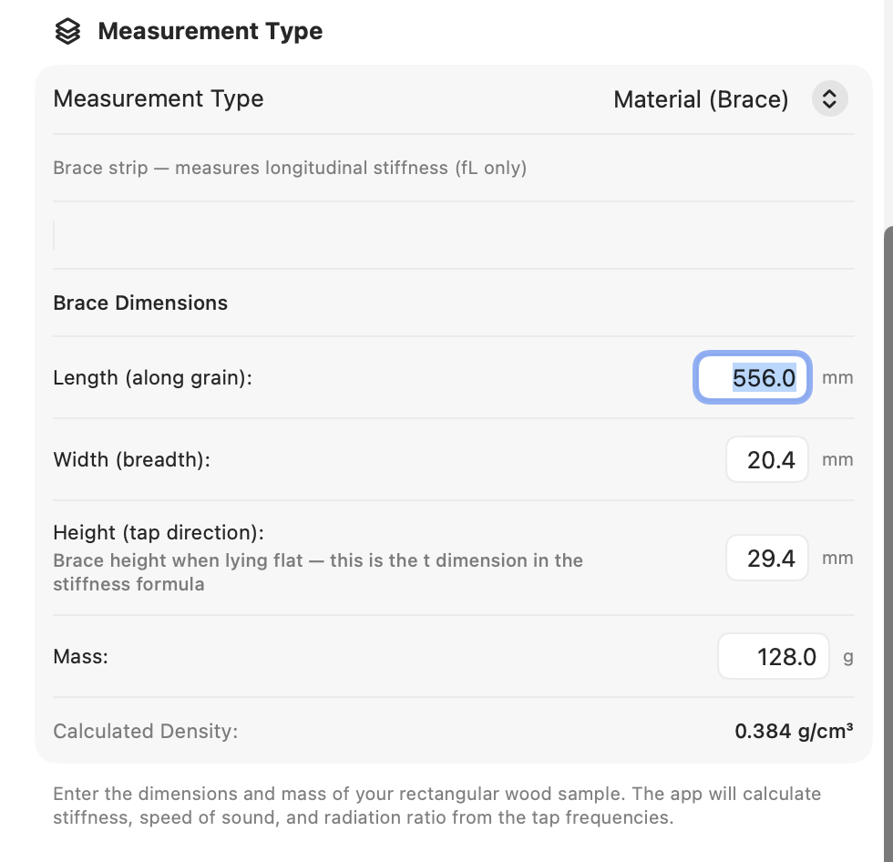
Open Settings → Measurement Type → Brace. The Brace Dimensions section has four fields:
- Length (along grain) (mm) — the long axis of the strip.
- Width (breadth) (mm) — the brace's breadth lying flat.
- Height (tap direction) (mm) — the dimension perpendicular
to the face you tap. This is the
tin the Euler–Bernoulli stiffness formula, so it's the one that drives E_L most strongly. The Settings panel itself flags this with a helper line under the field; double-check it before tapping. - Mass (g).
A Calculated Density line appears below the fields once all four are populated. Use it the same way as the plate-mode density preview — spruce should land in the 0.35–0.45 g/cm³ range, and a value well outside that is almost always a digit transposition.
5.3 Technique
A brace strip is a long thin beam — the same free-free fundamental applies, but the measurement is much simpler than plate because only one mode is in play.
- Hold the strip between thumb and forefinger 22% in from one end along the length. The other end hangs free.
- Lay the strip flat (or mount it however you usually orient it
on the bench) so the face you intend to tap is exposed. The
Heightvalue in Settings must match the dimension perpendicular to this face. - Press New Tap.
- Tap the centre of the top face. The spectrum freezes when the tap registers.
The Accept / Redo review flow is the same as in Plate mode (see §4.5). Accept locks in the measurement; Redo discards it and re-arms the detector. There is no phase counter — Brace mode runs in a single phase, so the status bar shows just the current state.
5.4 Reading Brace Results
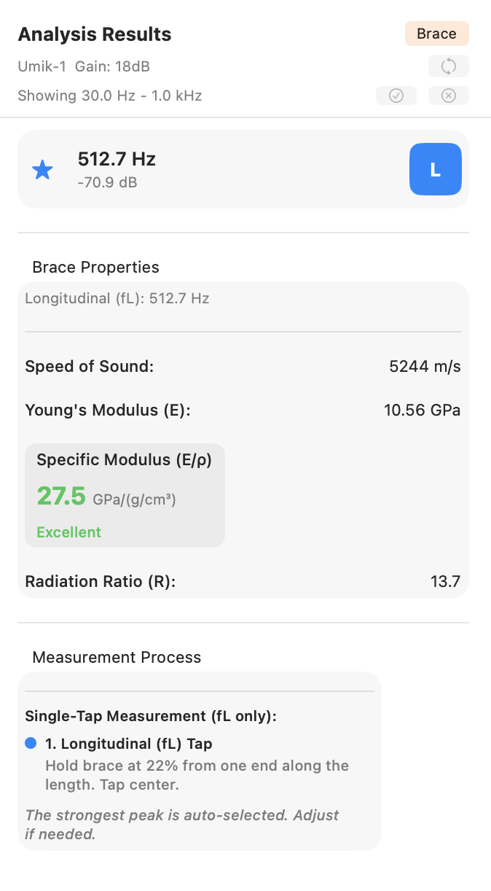
A completed brace measurement displays three sections in the Results panel.
Detected Peaks
A single row for the longitudinal peak. It shows a selection-indicator star, the peak frequency, the peak magnitude in dB, and a blue L phase badge.
Brace Properties
- Frequency used — fL in Hz.
- Speed of Sound — c_L in m/s.
- Young's Modulus (E) — in GPa.
- Specific Modulus (E/ρ) — the headline number, in GPa/(g/cm³), shown in large type. A quality rating (Excellent / Very Good / Good / Fair / Poor against the spruce scale) accompanies the value with a matching colour cue.
- Radiation Ratio (R) — in the same column.
There is no Cross/Long ratio or Overall Quality row — both are plate-only since they need cross-grain data.
Brace Process Instructions
A reference card describing the brace measurement procedure. Useful as an in-place refresher when you have come back to Brace mode after a break.
5.5 Using Brace Mode to Compare Stock
A practical workflow for evaluating a batch of brace strips:
- Label each strip (a pencil mark on the end grain or a small sticky label works) so you can match measurements to physical pieces later.
- Enter the strip's Length, Width, Height, and Mass in Settings. For a batch of strips with consistent stock dimensions you only have to change Mass between measurements; for variable stock all four fields need updating.
- Tap the strip.
- Record the result. The Notes field on the Save sheet is the right place for the strip's identifier — once saved, the saved measurement carries its provenance.
- Move on to the next strip.
For sorting by stiffness alone, the longitudinal frequency at the same dimensions is a sufficient proxy — higher fL means stiffer stock. For triaging across different sizes, sort by specific modulus (E_L/ρ).
A practical limitation worth keeping in mind: with no cross-grain or shear data, brace-to-brace comparisons are one-dimensional. A strip that reads well in brace mode might still have anisotropy or grain runout that only shows up in a plate-style measurement on the parent billet.
Chapter 6 — Working with the Spectrum
The spectrum chart is the centrepiece of the analysis screen. This chapter covers the gestures, shortcuts, and settings that let you read it the way you want without disturbing the measurement itself.
6.1 Live vs. Frozen Spectrum
Before a tap registers, the spectrum is live — the chart redraws on every FFT frame, showing the current microphone input in real time. Use this state to monitor ambient noise, dial in Threshold and Peak Min while paused (§2.6, §2.7), or simply confirm the microphone is working.
When a tap registers, the spectrum freezes on the capture so you can inspect peaks, drag labels, and read the Analysis Results panel without the chart moving under you. The status bar shows "Tap Detected" when the freeze happens.
Pressing New Tap discards the frozen capture (or current sequence) and returns to live mode, arming the detector for the next tap.
6.2 Zooming and Panning — iOS and iPadOS
- Pinch anywhere over the plot area to zoom both axes.
- Pinch over the frequency axis (the bottom of the chart) to zoom the frequency axis only.
- Pinch over the magnitude axis (the left edge) to zoom the magnitude axis only.
- Drag over the plot area to pan both axes. Drag over a single axis to pan that axis only.
To reset the view, tap the … button in the upper-right corner of the spectrum chart. The Chart Options sheet opens with two sections, each offering a per-axis or both-axes choice:
- Reset to Saved
- Reset Both Axes
- Reset Frequency Axis
- Reset Magnitude Axis
These return the chosen axis (or both) to the view stored as your default — see §6.8.
- Reset to Defaults
- Reset Both Axes
- Reset Frequency Axis
- Reset Magnitude Axis
These return the chosen axis (or both) to the app's built-in starting range.
The same sheet also exposes Reset Labels when any peak labels have been dragged from their auto-positions; that control is covered in §6.6.
6.3 Zooming and Panning — macOS, Windows, and Linux Desktop
Desktop interaction follows the same pattern as iOS/iPadOS but uses the scroll wheel and modifier keys. The chart is divided into three hover zones, each with its own scroll behaviour:
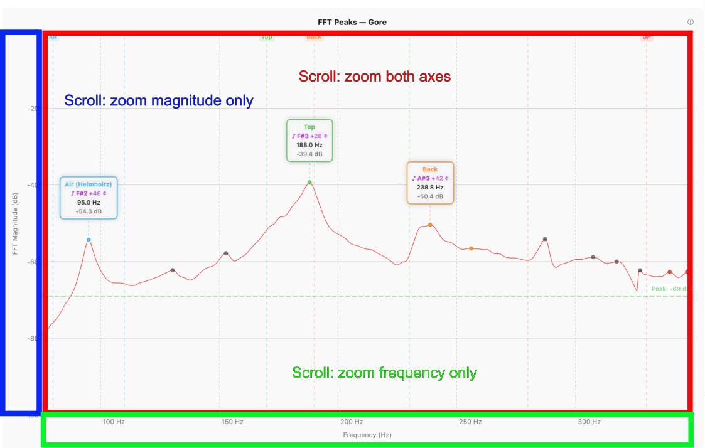
- Scroll over the plot area to zoom both axes simultaneously.
- Scroll over the frequency axis (the bottom of the chart) to zoom the frequency axis only.
- Scroll over the magnitude axis (the left edge) to zoom the magnitude axis only.
- Drag in any of the three zones to pan with the same axis-sensitivity rules.
Modifier keys augment scrolling without changing which zone you are in:
| Modifier | Scroll effect |
|---|---|
| ⇧ Shift | Pan the frequency axis |
| ⌥ Option (macOS) / Alt (Windows / Linux) | Pan the magnitude axis |
| ⌘ Command (macOS) / Ctrl (Windows / Linux) | Zoom both axes |
On a trackpad, two-finger pinch works the same as scroll-wheel zoom — over the plot area for both axes, over an axis for that axis only.
To reset the view, right-click anywhere in the chart area and choose Reset Axes from the context menu.
If you need to look the bindings up in place, the ? icon in the upper-right corner of the spectrum window opens a Zoom & Pan Controls popover that summarises all the gestures and modifier keys for the current platform.
6.4 Auto dB
Auto dB scales the magnitude axis to fit the current signal: the floor moves to just below the lowest visible value and the ceiling to just above the highest. It is the fastest way to land on a sensible magnitude range after a measurement, especially when the captured tap was much louder or quieter than the live signal that preceded it.
A button in the toolbar invokes Auto dB. The keyboard shortcut is ⌘0 on macOS; Ctrl+0 on Windows and Linux.
Use Auto dB after each measurement, or any time the spectrum clips or sits flat against the magnitude floor.
6.5 The Crosshair (iOS and iPadOS)
The crosshair is a touch-based readout for inspecting frequency and magnitude at any point on the chart.
- Tap the crosshair icon in the toolbar to enable it. The icon switches to while crosshair mode is active.
- Touch and drag anywhere on the chart. A vertical and horizontal line follow your finger; a small readout shows the frequency (Hz) and magnitude (dB) under the crosshair.
- Tap the icon again to disable.
The crosshair is a read-only tool — it does not change the selected peaks, the spectrum, or any saved state. On desktop the mouse position over the chart serves the same role and no toggle is needed.
6.6 Peak Labels
Each annotated peak carries a label showing the mode name, frequency (and pitch with cents offset in guitar mode). Labels are positioned automatically to minimise overlap, but you can move any label to a position you prefer.
- Drag a label to reposition it. The new position is saved with the measurement and restored when the measurement is reloaded.
- Reset an individual label — double-tap on iOS / iPadOS; right-click and choose Reset Position on desktop.
- Reset all labels — open the … menu in the upper-right corner of the spectrum chart and choose Reset Labels on iOS / iPadOS; right-click an empty area of the chart and choose Reset Labels on desktop.
6.7 Annotation Modes
The Annotations button cycles through three states that control which peaks are labelled on the chart:
- All — every detected peak is labelled. Useful for surveying a spectrum where you have not yet decided which peaks matter.
- Selected (default) — only peaks currently selected for analysis are labelled. Matches what most luthiers want during normal use.
- None — no labels. Useful for clean export images or for reading the bare spectrum shape without distractions.
Cycle via the Annotations button, or with the keyboard shortcut
⌘** on macOS / **Ctrl+ on Windows and Linux.
Annotation mode applies to the current view only — it is not saved with the measurement, and does not affect which peaks contribute to derived values (selection does that, see §3.6).
6.8 Saving the Current View as Default
Once you have zoomed and panned to a view you want as your starting point for every new measurement, save it:
Settings → Advanced → Display Settings → Save Current View
What is saved: the frequency range (low and high Hz) and the magnitude range (low and high dB) of the current chart. The saved view becomes the target of Reset to Saved (§6.2) and of right-click → Reset Axes (§6.3) on subsequent launches.
The default view is a single global setting, not per measurement mode. If you work in plate mode and guitar mode at different ranges, pick the view that suits the work you do most often and zoom from there for the other.
Chapter 7 — Saving, Exporting, and Sharing Measurements
7.1 Saving a Measurement
7.2 Viewing Saved Measurements
7.3 Loading a Measurement into the View
7.4 Viewing Measurement Details
7.5 Editing Location and Notes
7.6 Exporting a Spectrum Image
7.7 Exporting a PDF Report
7.8 Saving a Comparison
7.9 Exporting a Comparison Spectrum Image
7.10 Exporting a Comparison PDF Report
7.11 Exporting a .guitartap File
7.12 Importing a Measurement or Comparison
7.13 Sharing Between iOS and macOS
7.14 Deleting Measurements
Chapter 8 — Settings Reference
8.1 Opening Settings
8.2 Audio Input & Calibration
8.3 Measurement Type
8.4 Advanced — Display Settings
8.5 Advanced — Analysis Settings
8.6 Advanced — FFT Processing
Chapter 9 — Controls Reference
9.1 Toolbar — iOS iPhone (Portrait)
9.2 Toolbar — iOS iPhone (Landscape)
9.3 Toolbar — iOS iPad (Portrait and Landscape)
9.4 Menu Bar — macOS, Windows, and Linux
9.4a Menu Bar — macOS
9.4b Menu Bar — Windows and Linux (Python desktop app)
9.5 Individual Controls
9.6 Tap Controls
9.7 Spectrum Chart Interactions
See Chapter 6 for a complete reference to spectrum chart gestures and interactions.
Chapter 10 — Tips, Technique, and Troubleshooting
10.1 Tap Technique
10.2 Consistent Microphone Position
10.3 Dealing with Background Noise
10.4 Air Mode Technique
10.5 Ring-Out and Decay Time
10.6 Multi-Tap Averaging Strategy
10.7 Common Problems
| Problem | Likely cause | Fix |
|---|---|---|
| No tap detected | Threshold too high | Lower Threshold slider |
| False detections | Threshold too low or noisy room | Raise Threshold; use Pause between taps |
| Peaks missing | Peak Min too high | Lower Peak Min slider |
| Unknown peaks everywhere | Analysis range too wide | Narrow analysis range in Advanced settings |
| Spectrum doesn't update | Microphone permission not granted | Check System Settings (macOS) or iOS Settings |
| Plate calculation missing | Dimensions not entered | Open Settings → Measurement Type → Material |
| Gore thickness not shown | FLC not captured or not enabled | Enable Measure FLC in Settings |
| Results panel not visible | macOS: window too narrow | Widen the window |
| Plate/brace: stuck waiting for next phase | Missed the Accept button | Look for Accept (green, checkmark) in the tap controls — it replaces Pause during review |
| Plate/brace: want to redo a phase already accepted | Phase locked in | Tap New Tap to restart the whole sequence; individual phase redo is only available before Accept is tapped |
| Compare button not appearing | Fewer than 2 or more than 5 selected, or a plate/brace record is in the selection | Select 2–5 guitar measurements only; deselect any plate/brace records |
| Comparison: all curves same colour in exported image | Exporting from an older version | Update the app and re-export |
| Comparison PDF shows 0 spectra | Older app version | Update the app; comparison PDFs now report the correct spectra count |
| Loaded measurement: threshold/tap count differ from Settings | Loaded measurement values override live settings | The status bar shows a warning; adjust Threshold and Taps stepper as needed, or press New Tap to clear the loaded state and restore your current settings |
Chapter 11 — Glossary
Air (Helmholtz) mode — The resonance of the air cavity inside the instrument body, excited by the motion of air through the sound hole. Also called the Helmholtz resonance.
Bandwidth (−3 dB) — The width of a spectral peak measured at 3 dB below its maximum. Narrower bandwidth (higher Q) indicates lower damping.
Cross/Long ratio — The ratio of cross-grain Young's modulus to longitudinal Young's modulus (E_C / E_L). For spruce, typically 0.04–0.08.
Decay time — The time (in seconds) for a tap response to decay to 1/e of its peak amplitude. A measure of structural damping; higher values indicate lower damping.
Dipole mode — A bending mode of the guitar top plate where the upper and lower bouts move in opposite phase.
E_C (Young's modulus, cross-grain) — Stiffness of the wood measured perpendicular to the grain direction (radial or tangential). Expressed in GPa.
E_L (Young's modulus, longitudinal) — Stiffness of the wood measured along the grain direction. Expressed in GPa. The primary stiffness parameter for tonewood selection.
FFT (Fast Fourier Transform) — The algorithm used to convert the time-domain microphone signal into the frequency-domain spectrum displayed by the app.
FLC tap — A third tap measurement (Flat Long/Cross) used in Plate mode to estimate the shear modulus, which is required for the Gore target thickness calculation.
Free-free beam — A beam supported only at its nodal points (22% from each end), leaving it free to vibrate without damping at the supports. The standard suspension technique for Plate and Brace mode measurements.
Gore target thickness — The recommended final thickness for a guitar top or back plate, calculated from the plate dimensions, Young's moduli, and a stiffness target, following the method described by Trevor Gore.
Q factor — Quality factor; the ratio of a resonant peak's centre frequency to its −3 dB bandwidth. Q = f₀ / Δf. Higher Q indicates lower damping.
Radiation ratio (R) — A figure of merit for tonewood; R = c_L / √ρ = √(E_L/ρ³). Higher values indicate a lighter, stiffer wood that radiates sound more efficiently.
Ring mode — A symmetric bending mode of the guitar top plate involving the rim of the lower bout.
Specific modulus (E/ρ) — Young's modulus divided by density. Also written as c² (where c is the speed of sound in the material). A key predictor of tap tone quality.
Speed of sound (c) — The speed at which a longitudinal stress wave travels through the wood: c_L = √(E_L / ρ). Expressed in m/s.
Tap Tone Ratio — The ratio of the top mode frequency to the air mode frequency (f_top / f_air). Typical range for a well-voiced guitar: 1.8–2.4.
Top / Back mode — The fundamental bending mode of the guitar top plate or back plate, respectively; often the strongest peak in a guitar tap spectrum.
Unknown mode — A detected spectral peak that does not fall within any defined frequency window for the selected guitar type. Shown with a "?" label when Show Unknown Modes is enabled.
Upper modes — Resonant modes above the main top and back modes; their significance increases with frequency and build stage.
Appendix A — Keyboard Shortcuts (macOS)
| Shortcut | Action |
|---|---|
| ⌘, | Settings |
| ⌘S | Save Measurement… |
| ⌘E | Export Spectrum Image… |
| ⇧⌘E | Export PDF Report… |
| ⌘0 | Auto dB |
| ⌘` | Cycle Annotations |
| ⌘M | Show Metrics |
| ⌘L | Show Measurements |
Appendix B — File Formats
.guitartap
A JSON-based measurement container. Contains:
- All detected peaks (frequency, magnitude, Q, bandwidth, mode assignment, annotation offset, manual overrides)
- Spectrum snapshot: Base64-encoded little-endian float32 array of magnitude values
- Settings at time of capture (measurement type, frequency windows, Peak Min, analysis range)
- Metadata: capture date, device, location label, notes
Compatible between iOS, iPadOS, and macOS versions of GuitarTap. Can be round-tripped: exported on iOS, imported on macOS, and vice versa.
Calibration Files (.txt / .cal)
Frequency response compensation data for a measurement microphone. Format: two-column plain text, one frequency–magnitude pair per line.
<h1 id="frequency-hz-magnitude-db">Frequency (Hz) Magnitude (dB)</h1>
20.0 -1.2
50.0 -0.4
100.0 0.0
...
20000.0 -3.1
The app applies the inverse of the calibration curve to the incoming spectrum, correcting for microphone frequency response deviations.
Exported Formats
| Format | Extension | Contents |
|---|---|---|
| Measurement data | .guitartap | Full peak data + spectrum (JSON) |
| Spectrum image | .png | Chart as rendered on screen |
| PDF report | Spectrum chart + peak table + analysis summary |